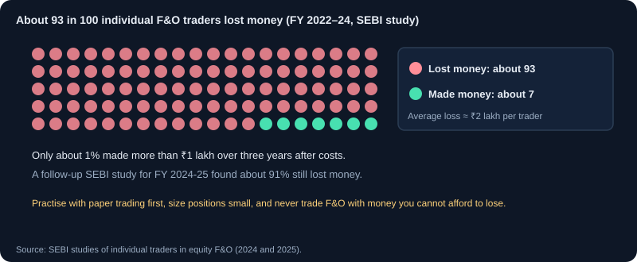
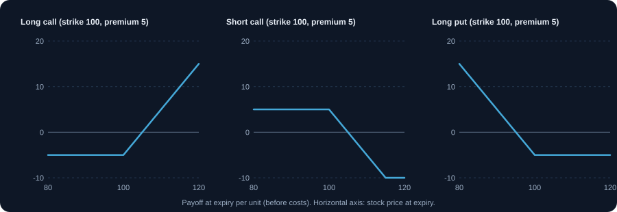

Futures & Options
Understand futures, call and put options, strike price, expiry, margin and payoff, along with their risks.
Read this first: what SEBI's data shows
SEBI studied individual traders in equity futures and options. Between FY 2021-22 and FY 2023-24, about 93% of more than one crore individual F&O traders lost money, with an average loss of around ₹2 lakh per trader including transaction costs. A follow-up study for FY 2024-25 again found that about 91% of individual traders lost money.
- Only about 1% of individual traders made more than ₹1 lakh profit over those three years after costs.
- Traders who traded more often lost more on average; brokerage, taxes and slippage alone take a large share.
- Option buying looks cheap per trade, but most short-dated options expire worthless.
Treat F&O as an advanced skill. Practise with the paper-trading simulator first, keep position sizes small, and risk only money you can afford to lose.
1. What derivatives are
A derivative is a contract whose value depends on an underlying asset, such as a share or an index. Futures and options are the most common in India. They allow you to take a position on the price without owning the asset, and they use leverage. That makes them powerful tools for hedging and speculation, and also a common cause of large losses for people who do not understand them.
2. Futures: an obligation to buy or sell
A futures contract is an agreement to buy or sell an asset at a set price on a future date. Both the buyer and the seller are obligated. In practice, most index and stock futures in India are settled in cash, so the difference between the agreed price and the settlement price is paid in money.
Example: you buy one lot of an index future at 24,000, with an illustrative lot size of 50. Exposure = 50 × 24,000 = ₹12,00,000. If the index rises 200 points, profit = 200 × 50 = ₹10,000. If it falls 200 points, loss = ₹10,000, before costs. The margin you deposit is only a fraction of the exposure.
3. Options: rights for the buyer, obligations for the seller
An option gives the buyer the right, but not the obligation, to buy (call) or sell (put) at the strike price, on or before the expiry. The seller (writer) receives the premium and takes on the obligation if the buyer exercises.
- Call option: the right to buy at the strike. Buyers profit if the price rises above strike plus premium.
- Put option: the right to sell at the strike. Buyers profit if the price falls below strike minus premium.
- Premium: the price the buyer pays the seller. It is the maximum loss for the buyer.
- Seller: receives the premium. The seller's loss can be large or unlimited if not hedged.
4. Key terms you must know
- Strike price: the price at which the option can be exercised.
- Expiry: the date the contract ends. Index options in India have weekly and monthly expiries; check the current schedule.
- Lot size: the fixed number of units in one contract. You trade in whole lots.
- In the money (ITM): a call with price above strike, or a put with price below strike. Has intrinsic value.
- At the money (ATM): strike near the current price. Mostly time value.
- Out of the money (OTM): a call with price below strike, or a put with price above strike. Only time value.
- Intrinsic value and time value: the premium equals intrinsic plus time value. Time value falls as expiry approaches.
5. Payoff at expiry: the arithmetic
At expiry, an option's value is its intrinsic value only. For a call: max(price − strike, 0). For a put: max(strike − price, 0). Profit equals that value minus the premium paid.
Example: buy a 24,000 call for ₹150 premium, lot 50. Maximum loss = 150 × 50 = ₹7,500. At expiry the index is 24,300: intrinsic value 300, profit = (300 − 150) × 50 = ₹7,500. At expiry the index is 23,900: the option expires worthless, loss ₹7,500.
6. Margin and the seller's risk
Selling options requires margin, because the seller can lose a lot. Margin requirements change with volatility and the price of the contract, and can increase suddenly in volatile markets. If the position moves against you and margin is insufficient, the broker may close it at a loss. Know the margin before you place an order.
- Buyer: pays the premium in full. No margin call beyond the premium.
- Seller: must maintain margin. A large move against the position can trigger a margin call.
- Futures: margin is a deposit. The position is marked to market daily.
7. Hedging: a practical use
Options are often used to protect an existing portfolio. Example: you hold shares worth ₹5,00,000 and fear a fall. Buying a put on an index that moves with your holdings limits the loss if the market falls, at the cost of the premium. The hedge is imperfect, and the premium is a cost even if the fall does not happen.
8. Strategies a beginner can understand
- Long call or long put: a directional bet with limited loss (the premium).
- Covered call: you own the shares and sell a call against them. You earn a premium but give up gains above the strike.
- Protective put: you own the shares and buy a put. Limits the loss below the put strike.
- Bull call spread: buy one call and sell a higher strike call. Limits both profit and loss.
9. Expiry risks: what happens near the end
Options lose time value quickly near expiry. A small move can change a position from profit to loss in hours. Sellers face the risk of large moves, and buyers can lose all of the premium. Check the rules for physical or cash settlement, exercise and assignment with your broker before expiry.
10. Tax on derivatives
Income from futures and options trading is generally treated as non-speculative business income for tax purposes, which requires a trade log, a profit and loss statement and, above certain turnover limits, a tax audit. Losses can be carried forward within the rules. Rules change, so check the current position with a tax professional. See the Tax Basics module for the overview.
11. A decision framework for every derivatives trade
- What is the view, and what would prove it wrong?
- What is the maximum loss in rupees, and is it within my risk limit?
- What is the lot size, the premium or margin, and the total cost?
- When does the contract expire, and what happens near expiry?
- Is there a simpler way to express the same view with less risk?
12. Common derivatives mistakes
- Buying cheap out-of-the-money options as a lottery ticket.
- Selling options without understanding the margin or the unlimited risk.
- Using leverage as if it were free money.
- Holding through expiry without knowing the settlement rules.
- Ignoring implied volatility, which can make an option expensive even when the view is right.
13. F&O strategies: buy and sell rules
Options and futures strategies are chosen by three questions: which way do you expect the price to move, how big the move might be, and how expensive options are (implied volatility). The table below links the view to a strategy. Limit risk before you place any order, and check margin and lot size.
F&O rules that changed in 2024–25
- The minimum contract size for index derivatives rose to ₹15 lakh at the time of review, so lot sizes went up. Lot sizes are reviewed twice a year; always check the current size on the exchange website.
- Each exchange may offer a weekly expiry on only one benchmark index (NIFTY 50 on NSE, SENSEX on BSE).
- Option buyers must pay the full premium upfront, and intraday position limits are monitored.
- An extra 2% margin applies to short options on expiry day, and the calendar-spread margin benefit is removed on expiry day.
- STT rose from October 2024: 0.1% of the premium on options sold and 0.02% on futures sold.
- Expiry days moved in September 2025: NSE index derivatives now expire on Tuesday and BSE's on Thursday. Check each exchange's current calendar.
Choosing a strategy: view and volatility
- Strongly bullish, options cheap (low IV): buy a call or a bull call spread.
- Strongly bearish, options cheap: buy a put or a bear put spread.
- Mildly bullish, options expensive (high IV): sell a put spread (bull put spread), with defined risk.
- Mildly bearish, options expensive: sell a call spread (bear call spread), with defined risk.
- Range-bound, options expensive: iron condor, with defined risk.
- Big move expected, options cheap: long straddle or strangle (buy both a call and a put).
Strategy 1: Long call (bullish, limited risk)
Buy a call when you expect a clear rise before expiry. Maximum loss is the premium paid.
- Buy: call at or slightly above the current price, with enough time to expiry for the move to happen.
- Stop-loss: exit when the premium falls by a set percentage (for example 40 percent), or if the underlying closes below your technical level.
- Sell: at a target on the underlying (for example the resistance level), or when the premium reaches your target. Avoid holding into expiry without a plan.
Example: buy a 24,000 call for ₹150, lot 50, risk ₹7,500. Exit when the index reaches 24,300 (intrinsic ₹300, premium about ₹300), profit about ₹7,500 before costs.
Why it works
A call gains as the price rises above the strike. You risk only the premium, so the loss is known before entry.
Checklist before you buy
- You expect a clear rise before expiry
- The premium is not already inflated by high IV
- There is enough time to expiry for the move
- Exit level and premium stop are written
Position size example
Lot 50, premium ₹150, risk ₹7,500 (1 lot). Pick the number of lots so total premium fits your risk limit, for example one lot.
Strategy 2: Long put (bearish, limited risk)
Buy a put when you expect a clear fall. Maximum loss is the premium paid. The mirror image of the long call.
- Buy: put at or slightly below the current price, with enough time to expiry.
- Stop-loss: exit at a set premium loss, or if price closes above the level that proves the view wrong.
- Sell: at the support target, or when the premium reaches your target.
Why it works
A put gains as the price falls below the strike. Like the long call, the loss is capped at the premium.
Checklist before you buy
- You expect a clear fall before expiry
- IV is not extremely high
- Enough time to expiry
- Exit level and premium stop are written
Position size example
Lot 50, premium ₹150, risk ₹7,500. Keep the premium within your per-trade risk limit.
Strategy 3: Bull call spread (bullish, defined risk)
Buy a lower-strike call and sell a higher-strike call with the same expiry. It is cheaper than a naked call and caps both profit and loss.
- Buy: lower strike call and sell higher strike call, same expiry, at a moderate upside target.
- Maximum loss: the net debit paid. Maximum profit: the strike difference minus the net debit.
- Sell: close the spread at 50 to 70 percent of the maximum profit, or at expiry if the price is above the higher strike.
Example: buy 24,000 call at ₹200, sell 24,500 call at ₹80. Net debit ₹120. Max profit ₹380 (500 − 120), max loss ₹120, break-even 24,120. Close at ₹300 profit (about 80 percent of max) to lock gains.
Why it works
Buying one call and selling a higher one lowers the cost and defines the maximum profit and loss. It suits a moderate rise, not a huge one.
Checklist before you buy
- Your target is a moderate rise, not a large move
- The net debit fits your risk limit
- Both strikes have enough liquidity
- You know when you will close early
Position size example
Net debit ₹120 per unit, lot 50 = ₹6,000 maximum loss. Max profit ₹380 × 50 = ₹19,000. Size the number of spreads to keep ₹6,000 within your limit.
Strategy 4: Bear put spread (bearish, defined risk)
Buy a higher-strike put and sell a lower-strike put. The bearish version of the bull call spread.
- Buy: higher strike put and sell lower strike put, same expiry.
- Maximum loss: the net debit. Maximum profit: strike difference minus net debit.
- Sell: at 50 to 70 percent of maximum profit, or when the target level is reached.
Why it works
The bearish version of the bull call spread. It gains from a moderate fall, with both profit and loss fixed at entry.
Checklist before you buy
- Your target is a moderate fall
- The net debit fits your risk limit
- Strikes are liquid
- Early-exit target is set (for example 60 percent of max profit)
Position size example
Net debit is the maximum loss. Choose the number of spreads so the net debit equals your risk limit.
Strategy 5: Covered call (income on shares you hold)
If you own shares and expect them to stay flat or rise slowly, sell a call against them to earn premium. You give up gains above the strike.
- Setup: hold at least one lot of shares (or the matching quantity), and sell an out-of-the-money call.
- Choose a strike at or above your target price for the shares, with a month or so to expiry.
- Manage: if price rises above the strike, you may be assigned at the strike. Decide before expiry whether to roll the call.
- Downside: the premium cushions a small fall, but the shares can still lose value.
Why it works
You already own the shares. Selling a call earns premium, which cushions a small fall and adds income, in exchange for giving up gains above the strike.
Checklist before you buy
- You hold at least one lot of the shares
- You are willing to sell at the strike
- The premium is worth the upside you give up
- You know what you will do if the stock is called away
Position size example
Shares bought at 100, call at 105 sold for premium 5 per share on 100 shares = ₹500 income. Total return is capped at 110 per share.
Strategy 6: Protective put (hedge)
Buy a put to protect shares or an index position from a sharp fall, at the cost of the premium.
- Setup: hold the shares, and buy a put near or slightly below the current price.
- Cost: the premium. Compare it with the value of the protection you want.
- Sell: let the put expire if the market rises, or sell it to recover value if the fall happens and the hedge is no longer needed.
Example: hold shares worth ₹5,00,000 and buy an index put costing 1 percent of the value. A 10 percent fall loses ₹50,000 on shares but the put gains roughly the difference, reducing the net loss.
Why it works
A put on your shares sets a floor under the loss. It is insurance: you pay a premium to avoid a large fall.
Checklist before you buy
- Holding is large enough that a fall matters
- The premium is affordable relative to the protection
- The put expiry covers the risk period
- You know when to let the hedge expire
Position size example
Shares 1,000 at ₹100 (₹1,00,000). Put at 95, premium ₹2 per share = ₹2,000 hedge cost. Loss is limited to about ₹7 per share plus the premium.
Strategy 7: Iron condor (range-bound, high IV, defined risk)
Sell an out-of-the-money put spread and an out-of-the-money call spread. You profit if price stays between the two short strikes until expiry.
- Condition: range-bound market, no major event before expiry, implied volatility high.
- Build: sell a put and buy a lower put; sell a call and buy a higher call, same expiry.
- Maximum profit: the net credit received. Maximum loss: the strike width minus the credit.
- Exit: close at 50 percent of the credit received, or if price tests one of the short strikes; never hold through expiry without checking assignment rules.
Why it works
You profit if the price stays in a range. You collect premium on two sides and define the risk with the outer options.
Checklist before you buy
- Market is range-bound with no major event before expiry
- Implied volatility is high, so premium is rich
- Short strikes are outside likely moves
- You close at about half the credit or on a test of a short strike
Position size example
Net credit ₹2 per unit, width 5 on each side. Max loss = 5 − 2 = ₹3 per unit. Size so that the max loss times lot size is within your risk limit.
Strategy 8: Long straddle or strangle (big move expected)
Buy a call and a put at the same strike (straddle) or at different strikes (strangle). You profit from a large move in either direction. Costly if the move does not come.
- Condition: a major event such as results or a policy decision, with implied volatility not already very high.
- Build: buy an at-the-money call and put (straddle), or out-of-the-money call and put (strangle, cheaper).
- Breakeven: the strike plus or minus the total premium.
- Exit: sell after the event, before implied volatility collapses. Volatility crush can cost you even if the price moves.
Why it works
You profit from a large move in either direction. It suits a major event when you expect a big reaction but not the direction.
Checklist before you buy
- A major event is coming (results, policy)
- IV is not already very high before the event
- Total premium is affordable
- You plan to exit soon after the event
Position size example
Premium ₹10 per unit (call ₹5 + put ₹5), lot 50 = ₹500 per lot maximum loss. Break-evens 90 and 110 need a move of about 10 percent.
Strategy 9: Futures trend trade with a stop
Trade a breakout in the index or stock future, with a fixed stop, when the trend is clear.
- Buy: break above resistance on volume, with the higher timeframe trend up.
- Stop-loss: below the breakout low, sized so that the loss equals your planned risk (use ATR).
- Sell: at a target equal to 2 times the risk, or trail the stop under each higher swing low.
- Margin: keep extra margin above the minimum to avoid forced exits.
Why it works
A futures breakout trade has no premium but has leverage. A fixed stop based on volatility keeps the loss to your planned risk.
Checklist before you buy
- Higher timeframe trend is up (or down for a short)
- Breakout is on volume
- Stop is set at 1 times ATR or below the breakout low
- Margin cushion is well above the minimum
Position size example
Stop distance 60 points, lot 50 = ₹3,000 risk per lot. Size the number of lots so total risk equals your planned amount.
Sell rules for every F&O position
- Decide the exit before entry: the premium stop, the underlying level and the target.
- Close or roll well before expiry, especially in the last 2 to 3 sessions when time decay and gamma risk are highest.
- Track the Greeks: delta for direction, theta for daily cost or income, vega for volatility risk.
- Watch margin: a sudden rise in volatility can increase margin and force an exit.
Common F&O strategy mistakes
- Buying cheap out-of-the-money options with no clear reason for the move.
- Selling naked options without a hedge or a defined-risk alternative.
- Holding losing option positions into expiry, hoping for a last-minute reversal.
- Using the wrong strategy for the view: for example, buying options when volatility is very high before an event.
- Ignoring costs, margin and lot size, which can turn a correct view into a loss.
Charts and visuals


Worked examples
Futures P&L
Buy one lot of an index future at 24,000. Assume a lot size of 50 for illustration: exposure = 50 × 24,000 = ₹12,00,000. If the index rises 200 points, profit = 200 × 50 = ₹10,000. If it falls 200 points, loss = ₹10,000, before costs and margin charges.
Buying a put
Buy a 24,000 put for a premium of 150, lot size 50. Maximum loss = 150 × 50 = ₹7,500. At expiry, if the index is at 23,700, intrinsic value = 300, so the option is worth 300 × 50 = ₹15,000 and profit = ₹7,500.
Selling a call
Sell a 24,000 call for a premium of 150, lot size 50. If the index closes at 24,500 at expiry, the loss per unit is 500 − 150 = 350, so the total is 350 × 50 = ₹17,500. The loss keeps growing as the index rises.
Real-life scenarios
Expiry-day move
On expiry day an option can swing sharply as its time value disappears. A buyer can lose the whole premium within hours. Sellers face the risk of a large move against them with little time to adjust.
Margin call on a futures position
The index falls and your margin falls below the required level. You must add funds or the broker may close the position at a loss. Keep a buffer above the minimum margin.
Use cases
- Hedging: buying puts to protect a stock or index portfolio from a sharp fall.
- Covered call: owning shares and selling calls against them to earn premium, while capping upside.
- Speculation on a view of direction or volatility, with the risk limits set in advance.
Key takeaways
- Futures carry obligations on both sides; options give rights to buyers and obligations to sellers.
- Option buyers risk the premium; option sellers can face large losses.
- Lot size, margin and expiry must be understood before trading.
- Learn with paper trading and small positions first.
Key terms, explained
- Futures
- A contract to buy or sell an asset at a set price on a future date. Both sides have obligations.
- Option
- A contract giving the buyer the right, but not the obligation, to buy (call) or sell (put) at a set price before expiry.
- Call and put
- A call gives the right to buy at the strike price; a put gives the right to sell at the strike price.
- Strike price
- The price at which an option can be exercised.
- Expiry
- The date on which a futures or option contract ends.
- Lot size
- The fixed quantity in one derivatives contract. You trade in whole lots.
- Premium
- The price paid by the option buyer to the seller.
- ITM, ATM, OTM
- In the money (has intrinsic value), at the money (strike near price), out of the money (no intrinsic value).
- Open interest
- The number of outstanding derivative contracts that have not been closed or settled.
- Implied volatility (IV)
- The volatility the option price implies for the future. Higher IV makes options more expensive.
- Margin
- The money you must deposit with a broker to hold a leveraged position.
Questions learners ask
What is a lot size?
The fixed number of units in one contract. You trade in whole lots, so a small view may need a larger position than you expect. Check the current lot size before placing an order.
Can an option buyer lose more than the premium?
No. The buyer's maximum loss is the premium paid. The seller of an uncovered option can face much larger losses, including losses that grow as the price moves further.
What happens at expiry?
In-the-money options are settled based on the difference from the strike. Out-of-the-money options expire worthless. Check how your broker handles assignment and exercise before expiry.
Educational content only, not investment advice. Markets carry risk, including loss of capital. Examples are simplified and may exclude charges, taxes and slippage.